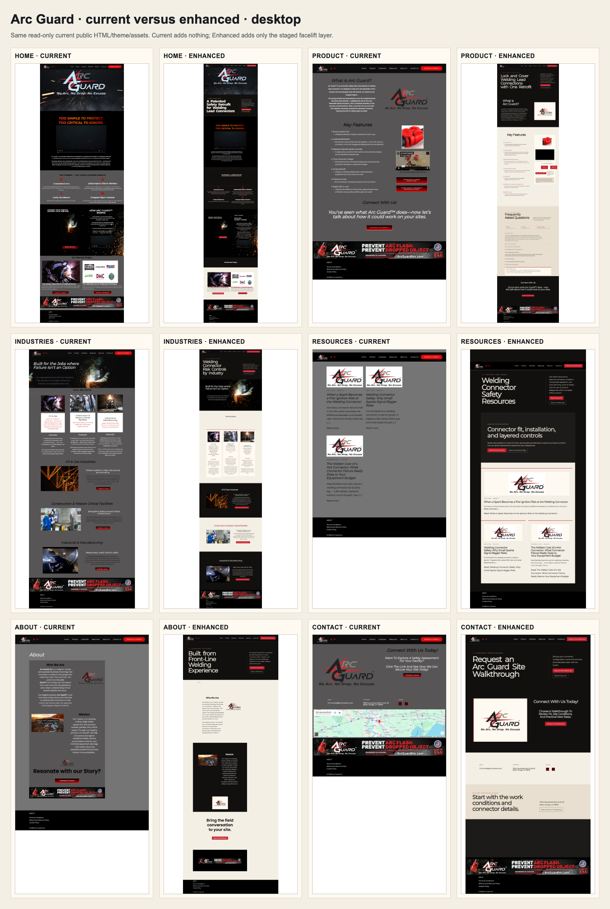
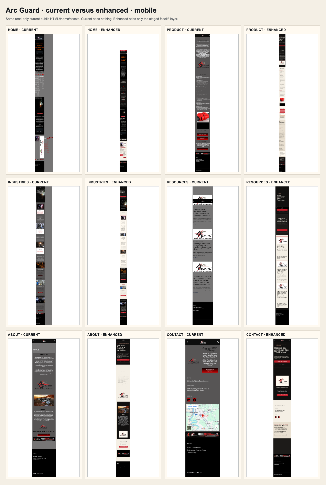
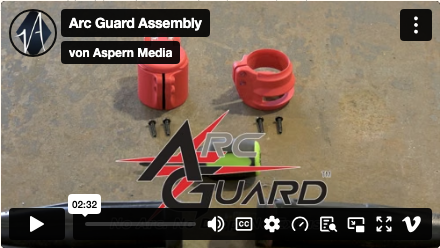
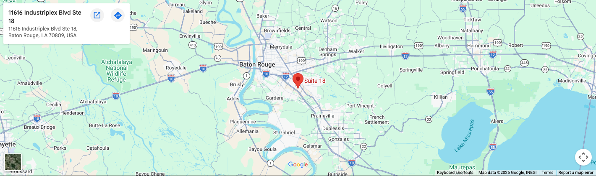

Arc Guard · approval proof
Same site. Preserved media. Focused facelift.
This offline review index opens by double-click. It shows the current public rendering and the enhanced rendering of the same six routes at desktop and mobile sizes—without logging in, running Node, or changing WordPress.
12/12Enhanced renders passed
0Enhanced overflow failures
0Broken enhanced images
6Pages · desktop + mobile
Desktop · current versus enhanced
Every row is one route. Left is Current; right is Enhanced. Click the image to open it full-size.

Mobile · current versus enhanced
The same six routes at 390 × 844. Click the image to open it full-size.

Open any individual render
Use the viewport buttons above, then choose Current or Enhanced below.
Preserved media · loaded proof
The full-page captures can catch a cross-origin embed before its pixels paint. These focused captures prove the preserved live embeds loaded and remained visible.

